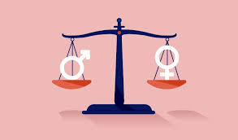
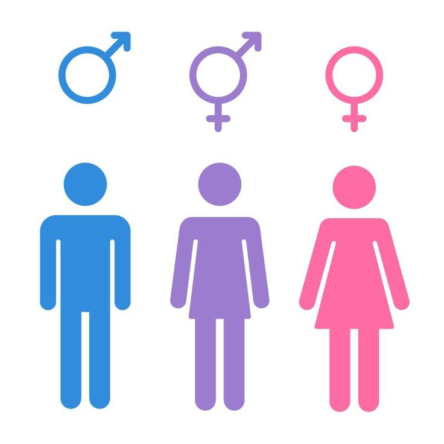
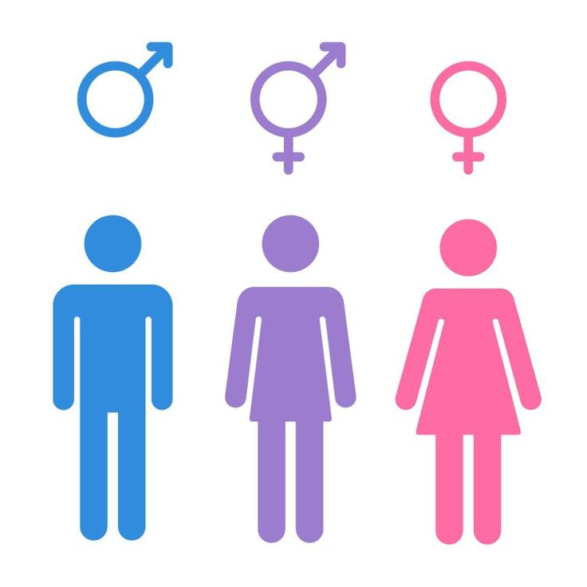
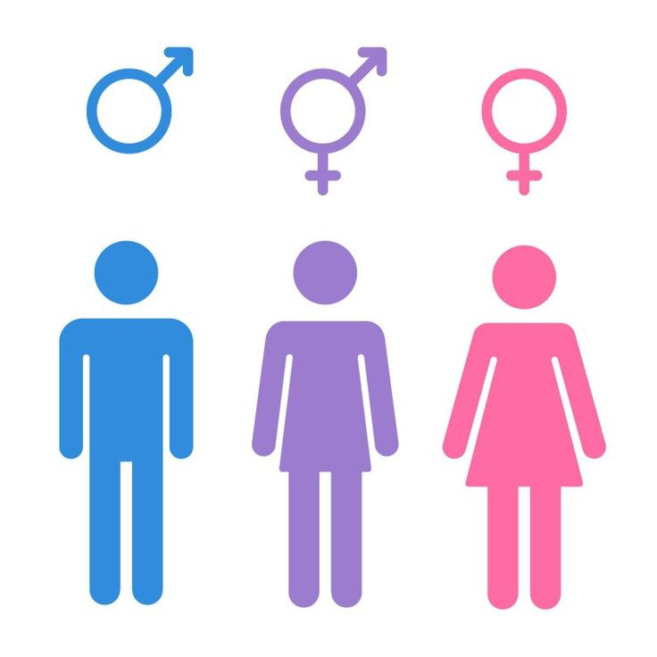

La equidad de género es el principio que busca garantizar que todas las personas, sin importar su género, tengan las mismas oportunidades, derechos y acceso a recursos. Sin embargo, para lograr una verdadera equidad, es fundamental entender y cuestionar los roles de género y estereotipos que han estado presentes en las sociedades a lo largo de la historia.
¿Qué son los Roles de Género?
Los roles de género son normas sociales que asignan ciertas funciones, actitudes y comportamientos a personas según su género. A lo largo del tiempo, estos roles han definido lo que se espera de los hombres y las mujeres, limitando sus posibilidades y afectando su desarrollo personal y profesional.
Algunos ejemplos de roles de género incluyen la expectativa de que las mujeres se dediquen al cuidado del hogar y la crianza de los hijos, mientras que se espera que los hombres sean los principales proveedores económicos. Estas expectativas limitan la libertad individual y refuerzan estructuras de poder que dificultan la equidad.
Estereotipos de Género y su Impacto
Los estereotipos de género son creencias simplificadas y generalizadas sobre las características y habilidades de los hombres y las mujeres. Estos estereotipos tienden a imponer ideas rígidas que afectan la autoestima, el rendimiento y las oportunidades.
Los hombres son considerados fuertes, racionales y aptos para trabajos de liderazgo.
Las mujeres son vistas como sensibles, emocionales y más adecuadas para trabajos de cuidado.
Las mujeres se asocian a profesiones como enfermería o enseñanza, mientras que a los hombres se les anima a roles en tecnología, ingeniería y ciencia.
Consecuencias de los Roles y Estereotipos de Género
Los roles y estereotipos de género tienen efectos profundos en distintos ámbitos de la vida:
En el ámbito profesional: La discriminación salarial, el acceso desigual a posiciones de liderazgo y la segregación ocupacional son consecuencias comunes. Esto limita el crecimiento de las mujeres en áreas dominadas por hombres y refuerza la idea de que ciertas profesiones son “inadecuadas” para ellas.
En la educación: Desde edades tempranas, los niños y niñas enfrentan expectativas que influyen en sus intereses y carreras futuras. Los estereotipos desalientan a las mujeres a estudiar en áreas STEM (ciencia, tecnología, ingeniería y matemáticas), lo cual se traduce en una baja representación femenina en estas áreas.
En la salud mental: Los hombres enfrentan presión para suprimir sus emociones y no pedir ayuda, lo que contribuye a problemas de salud mental no tratados. Las mujeres, por otro lado, pueden enfrentar ansiedad por equilibrar las expectativas laborales y familiares.

Cómo Superar los Roles y Estereotipos de Género
Superar estos roles y estereotipos es esencial para lograr una sociedad más justa e inclusiva. Algunas estrategias incluyen:
Educación: Desde temprana edad, es importante enseñar sobre equidad de género y cuestionar los estereotipos para fomentar una mentalidad crítica y libre de prejuicios.
Políticas de igualdad: Los gobiernos y empresas deben implementar políticas que promuevan la igualdad de oportunidades y el acceso a roles de liderazgo para mujeres y minorías.
Promoción de masculinidades positivas: Es fundamental fomentar que los hombres expresen sus emociones sin temor a prejuicios, permitiéndoles construir una identidad basada en la autenticidad en lugar de estereotipos de fuerza o dominancia.

En conclusión, la equidad de género no solo beneficia a las mujeres, sino a toda la sociedad. Eliminar roles y estereotipos de género permite una mayor libertad y diversidad, donde cada persona puede desarrollarse plenamente sin las limitaciones de las expectativas sociales. Al construir una cultura de respeto e inclusión, avanzamos hacia un mundo en el que todos tengan las mismas oportunidades de contribuir y prosperar.
 
